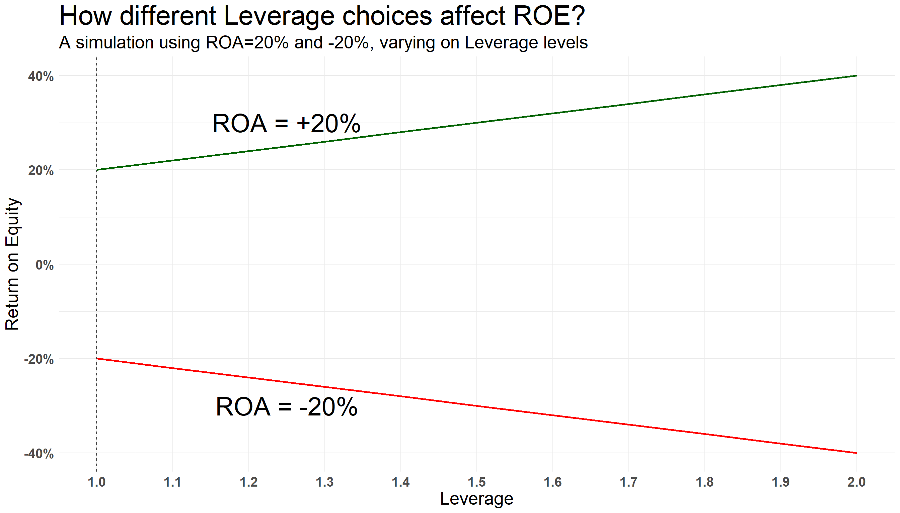
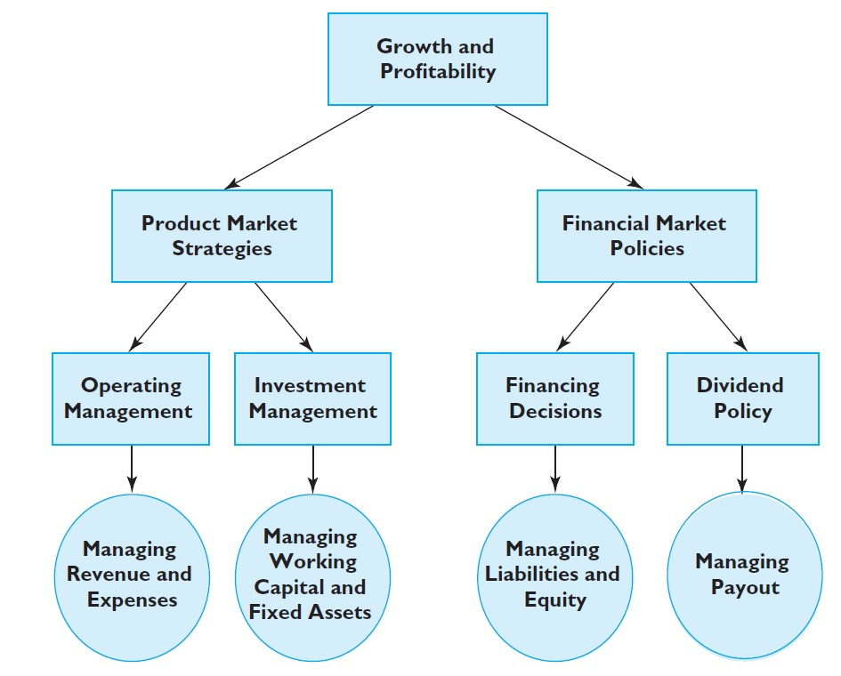
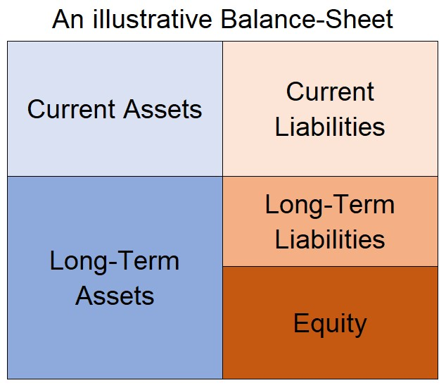
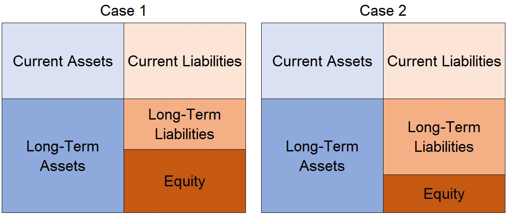
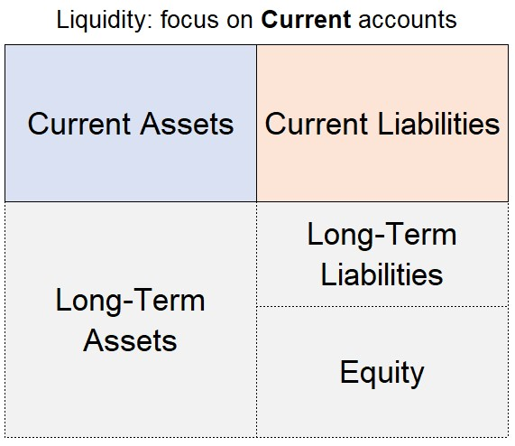
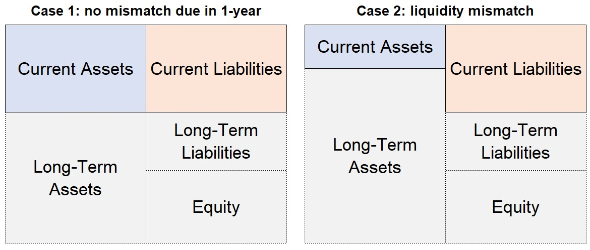
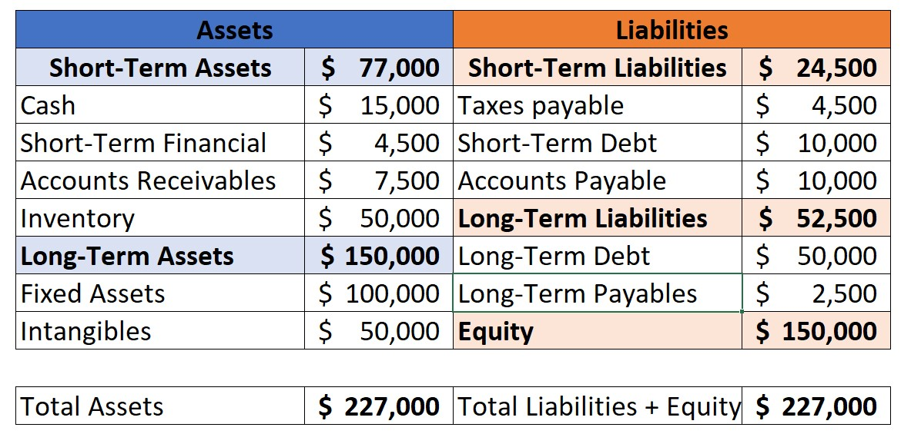
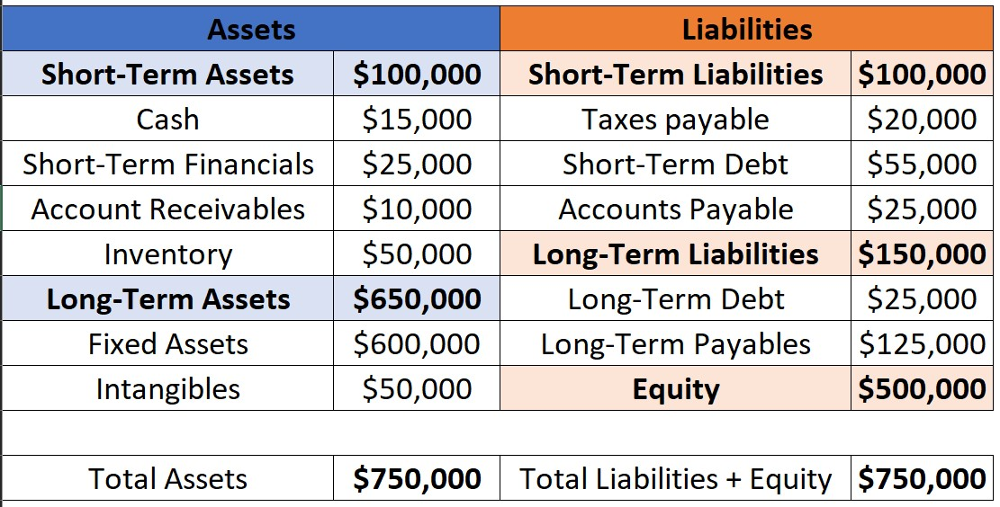
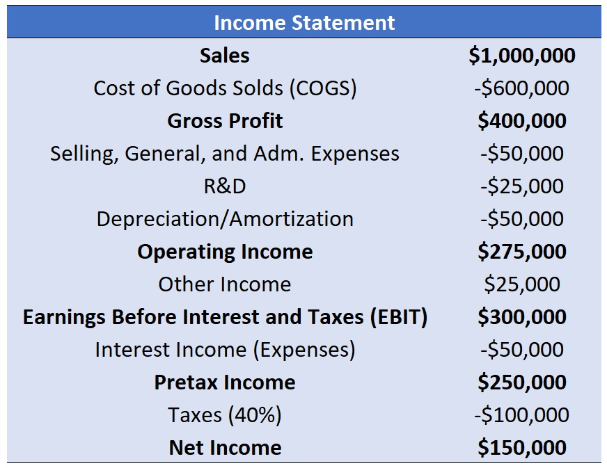
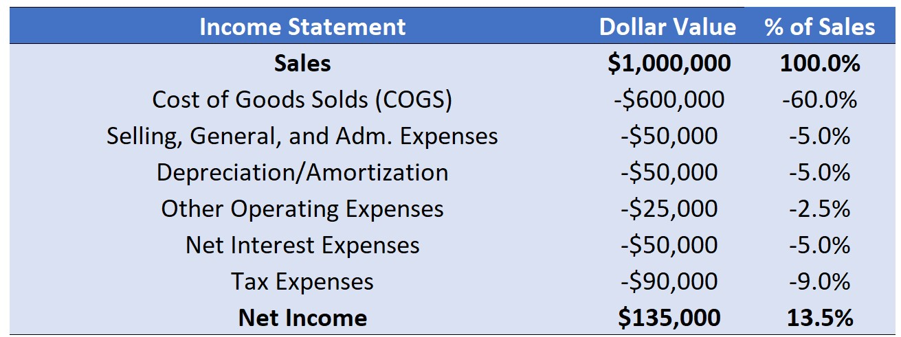

Financial Analysis
Lucas S. Macoris
Outline
- This lecture will extensively use the following text-books:
(Healy and Palepu 2012): Business Analysis Valuation: Using Financial Statements
(Berk and DeMarzo 2023): Corporate Finance
(Healy and Palepu 2012) provides a more comprehensive discussion around the use of financial indications, although the content pretty much resembles (Berk and DeMarzo 2023)
It is important to be familiarized with financial reporting concepts, such as understanding Balance-Sheet, Income Statements, and Cash-Flow Statements. For a summarized discussion on these reports, refer to (Berk and DeMarzo 2023), Chapter 2.
In the Appendix, you’ll find additional content (non-mandatory, but recommended) that can be used to get a deeper understanding and/or comprehend applications in real-world problems.
Financial Analysis
We saw in our previous lecture that:
- Finance Managers have to deal with investment and financing decisions
- The extent of their actions in these two areas can either create or destroy value
How to analyze the effect of their actions on the firm value?
To this point, the goal of financial analysis is to assess the performance of a firm:
- Is the firm getting too risky?
- Is the profitability aligned with its industry peers?
- Is the firm growing its business?
- Are profits trending upwards or downwards?
Problem: not all information about the firm’s actual and past performance is disclosed.
Analyzing Financial Statements
Investors often use accounting statements to evaluate a firm in one of two ways:
- Compare the firm with itself by analyzing how the firm has changed over time.
- Compare the firm to other similar firms using a common set of financial ratios.
Despite being a high-level view of complexity that is the firm’s business, such information can shed light on some areas that dictate the firm’s performance
Accounting statements are the inputs of a series of analysis that can be done to assess financial performance.
In this (and the next lectures), we’ll look at a particular type of analysis that uses financial statements as an input: ratio analysis
What drives firm performance?

Introducing ratio analysis
Objective: evaluate the effectiveness of the firm’s policies in each of the previously mentioned areas
High-level view: while ratio analysis may not give an analyst all the answers regarding the firm’s performance, it will help the analyst frame questions for further probing.
On the investment side, we have:
- Managing Revenue and Expenses
- Managing Working Capital and Fixed Assets
On the financing side, we have:
- Managing Liabilities and Equity
- Managing Payout
For each of these areas, we can use financial statements and create indicators that shed light on important factors that drive firm’s performance!
Liquidity and Financial Strength
Our starting point will be looking at the capacity that a firm has to honor its liabilities
Financial analysts often use the information in the firm’s balance sheet to assess its financial solvency and liquidity:
Before we dive into the calculations, let’s look at two important definitions:
Solvency - Definition
The ability of a company to meet its long-term debts and financial obligations. Solvency portrays the ability of a business (or individual) to pay off its financial obligations.
Liquidity - Definition
Liquidity refers to the ease with which an asset, or security, can be converted into cash without affecting its market price. In other words, liquidity describes the degree to which an asset can be quickly bought or sold in the market at a price reflecting its true value.
Solvency Measures

The amount of Debt vs. Equity can shed light on the solvency of a firm
The higher the % of Equity, all things equal, the higher its solvency
What happens if we change the % of Equity and Debt?
Solvency Measures

- From Case 1 \(\rightarrow\) Case 2: firm increased its leverage
- Case 2 may face higher difficulty in paying back its debt \(\rightarrow\) increased risk of insolvency
Solvency Ratios
To evaluate the mix of debt and equity in a firm’s capital structure, we can use:
- Liabilities-to-Equity: measures the overall solvency:
\[ \text{Liabilities to Equity}=\dfrac{\text{Total Liabilities}}{\text{Equity}} \]
- Debt-to-Equity: focus on the Debt component, which is generally more binding:
\[ \text{Debt to Equity}=\dfrac{\text{Short-Term Debt + Long-Term Debt}}{\text{Equity}} \]
Interpreting Solvency Ratios
- Is less Debt always a good idea? No! There are several potential benefits of having debt:
- Less costly: debt is typically cheaper than equity because the firm promises predefined payment terms to debt holders
- Tax-shield: in most countries, interest on debt financing is tax deductible \(\rightarrow\) lower taxes
- Debt holders as monitors debt can impose discipline on the firm’s management and motivate it to reduce wasteful expenditures
- All-in-all, the optimal level of debt needs to trade-off:
- The benefits of having debt in the financing mix
- The inherent risks related to having a high amount of debt and not being able to honor it
- Firms with low business risk can rely more on debt than more volatile firms
Liquidity Measures

Regardless of having enough resources to pay off its obligations, can the firm pay on time?
Liquidity evaluates the risk related to a firm’s current liabilities
In general, ratios attempt to measure the firm’s ability to repay its current liabilities using its the current assets
Liquidity Measures

- From Case 1 \(\rightarrow\) Case 2: firm decreased its liquidity
- Case 2, even if it is a profitable business, can run out of cash due to a liquidity mismatch!
Liquidity Ratios
- Current Ratio: measures overall liquidity
\[ \text{Current Ratio}=\dfrac{\text{Current Assets}}{\text{Current Liabilities}} \]
- Quick Ratio: focus on the more liquid components of current assets
\[ \text{Quick Ratio}=\dfrac{\text{Cash + Short-Term Investments + Accounts Receivable}}{\text{Current Liabilities}} \]
- Cash Ratio: focus only on the portion that is straighforward to convert into cash:
\[ \text{Cash Ratio}=\dfrac{\text{Cash + Marketable Securities}}{\text{Current Liabilities}} \]
Interpreting Liquidity Ratios
If a Liquidity Index is higher than 1 \(\rightarrow\) the firm has, to some extent, enough resources to pay its current obligations
If a Liquidity Index lower than 1 \(\rightarrow\) the firm may not have enough resources when its current debt is finally due
Note that a the firm can face a short-term liquidity problem even with a Current Ratio exceeding one when some of its current assets are not easy to liquidate
For these reasons, the Quick Ratio and the Cash Ratio are more conservative:
\[ \underbrace{\text{Cash Ratio} >> \text{Quick Ratio} >> \text{Current Ratio} }_{\text{From highest-to-lowest in the degree of conservativeness}} \]
- The higher the liquidity index, the better? Not necessarily!
Concept Check
Assume the following data: Current Assets = 450; Current Liabilities = 250; Inventory = 200; Cash = 50; Account Receivables = 200. Calculate and interpret the Quick Ratio.
- 1.0
- 2.0
- 1.2
- 0.4
A: using the formula, we have:
\[ \text{Quick Ratio}=\dfrac{\text{Cash and ST Investments + Account Receivables}}{\text{Current Liabilities}}=\dfrac{50+200}{250}=1 \]
- A Quick Ratio of 1 means that for each dollar due in the short-term, the firm has the same dollar value in assets.
Concept Check
- Using the same information as before, calculate the Current Ratio.
A: using the formula, we have:
\[ \text{Current Ratio}=\dfrac{\text{Current Assets}}{\text{Current Liabilities}}\rightarrow\dfrac{450}{250}=1.8 \]
Concept Check
- What can you say about the firm’s liquidity in this case as the Current Ratio is >1 and the Quick Ratio is equal to 1? Can we asset that the firm has a zero risk of incurring in liquidity issues?
A: we can’t assert that the firm has not liquidity risk
First, the Current Ratio does not take into consideration the fact that Inventories are, in general, less liquid, and by definition, cannot be guaranteed to be liquidated at book value.
In addition to that, even if the Quick Ratio is equal to one, one might think about situations where a firm cannot recover the totality of its account receivables, which could also hinder the firms’ ability to honor its current obligations.
- Overall, these two points are examples of (potential) accounting distortions that affect the interpretation of financial ratios.
Concept Check
Considered alone, which of the following would increase a company’s current ratio?
- An increase in accounts payable.
- An increase in net fixed assets.
- An increase in accrued liabilities.
- An increase in notes payable.
- An increase in accounts receivable.
Concept Check
Considered alone, which of the following would increase a company’s Current Ratio?
- An increase in accounts payable.
- An increase in net fixed assets.
- An increase in accrued liabilities.
- An increase in notes payable.
- An increase in accounts receivable.
A: any positive changes on a company’s Current should come from a increase in Current Assets or a decrease in Current Liabilities. The only alternative where we see such pattern is when there is an increase in Account Receivable.
Calculate and interpret all ratios using the data below

Solvency Ratios
- Liabilities-to-Equity
\[ \dfrac{(\text{S.T Liabilities + L.T Liabilities})}{Equity} =\dfrac{(24,500+52,500)}{150,000}=\dfrac{77,000}{150,000}\approx 0.51 \]
- Debt-to-Equity
\[ \dfrac{(\text{S.T Debt + L.T Debt})}{Equity} =\dfrac{(10,00+50,000)}{150,000}=\dfrac{60,000}{150,000}= 0.40 \]
- Interpretation: for each $0.4 in debt, the firm has $1 or 2.5 times the amount, to cover
Liquidity Ratios
- Calculating the Liquidity Ratios:
\[ \text{Current Ratio}\small=\dfrac{\text{Current Assets}}{\text{Current Liabilities}}=\dfrac{77,000}{24,500}\approx3.14 \] \[ \text{Quick Ratio}=\small \dfrac{\text{Cash+S.T Inv + Acc. Rec.}}{\text{Current Liabilities}}=\dfrac{15,000+4,500+7,500}{24,500}=\dfrac{27,000}{24,500}\approx1.1 \]
\[ \text{Cash Ratio}=\small \dfrac{\text{Cash + S.T Financials}}{\text{Current Liabilities}}=\dfrac{15,000+4,500}{24,500}=\dfrac{19,500}{24,500}\approx0.8 \]
- Interpretation: firm is heavily dependent upon the firm’s capability to quickly liquidate its inventory at the book price!
Integrating different Financial Statements
We’ll now move towards profitability ratios
In order to understand profitability, we need to understand the relationship between the firms’ assets and its income generation:


One indicator to rule them all
At the end of the day, shareholders will ask: for each dollar invested, how much does the firm return back to its shareholders?
The Return on Equity (ROE) measures exactly this:
\[ ROE=\dfrac{\text{Net Income}}{\text{Equity}} \]
- ROE is a comprehensive indicator of a firm’s performance because it provides an indication of how well managers are employing the funds invested by the firm’s shareholders to generate returns:
\[ ROE=\dfrac{\text{Net Income}}{\text{Equity}}=\dfrac{150,000}{500,000}=30\% \]
Analyzing ROE
In the long-run, firms are expected to earn a ROE that is higher than its cost of capital:
- Consistently generating ROE above average, absent any barriers to entry, makes entry attractive for competitors
- \(\uparrow\) Competition \(\rightarrow\) ROE tends to go down to a “normal”, benchmark level
Short-term deviations from such “benchmark” level of ROE can occur due to:
- Industry conditions and competitive strategy
- Accounting distortions
Drawbacks:
ROE doesn’t explain the whole story: it shows how well managers are employing shareholders’ capital, but it cannot explain what were the drivers of such performance
Accounting distortions: ROE comparisons can be misleading if, for some reason, different firms are exposed to different accounting treatments
Decomposing ROE
- Say that you want to understand how the firm has generated the \(30\%\) ROE previously shown. A firm’s ROE can be broke down in two factors:
- The profitably it employs its assets
- How big the firm’s asset base is relative to shareholders’ investment.
\[ ROE=\dfrac{\text{Net Income}}{\text{Equity}}=\underbrace{\dfrac{\text{Net Income}}{\text{Assets}}}_{ROA}\times \underbrace{\dfrac{\text{Assets}}{\text{Equity}}}_{Leverage} \]
The Return on Assets (ROA) tells us how much profit a company is able to generate for each dollar of assets invested, irrespective of the mix of financing
Financial leverage indicates how many dollars of assets the firm is able to deploy for each dollar invested by its shareholders
ROA and Financial Leverage
- Using the numbers from our company, we have:
\[ ROA = \dfrac{\text{Net Income}}{\text{Assets}}=\dfrac{150,000}{750,000}=20\% \]
\[ Leverage= \dfrac{\text{Assets}}{\text{Equity}}=\dfrac{750,000}{500,000}=1.5 \]
- Therefore, we can compute ROE as:
\[ ROE= ROA \times Leverage = 20\% \times 1.5 = 30\% \]
The effects of financial leverage
Analyzing the ROE decomposition
Our ROE decompositon yielded the following results:
- The Return on Assets is 20%
- Firm’s leverage is 1.5
We can see that leverage acts in this case by bumping up the shareholder’s return
- As the firm uses debt in its mix, after paying out the interest expenses, all the remaining net income is accrued to the shareholders
- Therefore, using debt leverages the returns since the the value of assets being employed in the operation are higher than what the shareholders are employing
Concept check-in
Define if the statements below are TRUE or FALSE:
- Since ROE is a high-level view of the return to the shareholders, it can be safely used to compare firms from different industries
- Looking at the ROA portion of ROE, it can inform about the value that managers get from the assets, but it does not point to the operational levers that generated such performance
- Higher leverage always helps by leveraging up the returns to the shareholders
- Calculating a given industry’s ROE can shed light on the industry’s equilibrium return, and it is useful for benchmarking
- If a firm opts to perform a sale-and-leaseback operation, it will never affect its calculated ROE
Concept check-in
Define if the statements below are TRUE or FALSE:
- Since ROE is a high-level view of the return to the shareholders, it can be safely used to compare firms from different industries
- Looking at the ROA portion of ROE, it can inform about the value that managers get from the assets, but it does not point to the operational levers that generated such performance
- Higher leverage always helps by leveraging up the returns to the shareholders
- Calculating a given industry’s ROE can shed light on the industry’s equilibrium return, and it is useful for benchmarking
- If a firm opts to perform a sale-and-leaseback operation, it will never affect its calculated ROE
Understanding operational performance - DuPont’s Formula
Suppose you now want to dissect the ROE levers even deeper. A way to do this is to analyze the composition of the ROA portion:
\[ \small ROE=ROA\times Leverage=\dfrac{\text{Net Income}}{\text{Assets}}\times \dfrac{\text{Assets}}{\text{Equity}}=\bigg[\bigg(\dfrac{\text{Net Income}}{\text{Sales}}\times \dfrac{\text{Sales}}{\text{Assets}}\bigg)\bigg]\times \dfrac{\text{Assets}}{\text{Equity}} \] Therefore, we can view ROE as a composite of:
\[ \small ROE=\underbrace{\dfrac{\text{Net Income}}{\text{Sales}}}_{\text{Net Profit Margin}}\times \underbrace{\dfrac{\text{Sales}}{\text{Assets}}}_{\text{Asset Turnover}}\times \underbrace{\dfrac{\text{Assets}}{\text{Equity}}}_{Leverage} \]
- The Net Profit Margin indicates how much a firm keeps for each dollar of sales it makes
- The Asset Turnover indicates how many sales it gets for each dollar of assets
Applying the DuPont’s ROE Decomposition
Using the numbers from our example, we have:
\[ \small ROE=\underbrace{\dfrac{150,000}{1,000,000}}_{\text{Net Profit Margin}}\times \underbrace{\dfrac{1,000,000}{750,000}}_{\text{Asset Turnover}}\times\underbrace{\dfrac{750,000}{500,000}}_{\text{Leverage}}=0.15\times 1.33 \times 1.5 = 30\% \]
This preliminary decomposition of ROE begins to show us how an examination of the building blocks of these ratios can yield a deeper understanding of how strategic, investment, and financing decisions made by the firm affect its ratios:
- By nailing ROE down to specific determinants, one can understand how managers are generating return to the shareholders
- Understanding and comparing these specific drivers to benchmarks help us understanding the areas where the managers are over(under)performing
\(\rightarrow\) See Leverage Example.xlsx (available on eClass®) for a detailed explanation.
Concept Check
Bonner Corp.’s sales last year were $430,500, and its year-end total assets were $360,000. The average firm in the industry has a total assets turnover ratio (TATO) of 2.2. Bonner’s new CFO believes the firm has excess assets that can be sold so as to bring the TATO down to the industry average without affecting sales. By how much must the assets be reduced to bring the TATO to the industry average, holding sales constant?
- $164,318
- $172,979
- $182,083
- $191,188
- $200,747
Concept Check
- Using that the assets turnover formula with the actual firm’s sales and the target TATO, we have that:
\[ \small \text{Target Asset Turnover}=\dfrac{Sales}{Assets}\rightarrow 2.2=\dfrac{430,500}{Assets}\rightarrow Assets=\dfrac{430,500}{2.2}\approx 195,682 \]
- Thus, the amount that needs to be reduced in terms of assets is given by:
\[ \Delta Assets = \text{Actual Assets}-\text{Target Assets}\rightarrow 360,000-195,681.8\approx 164,318 \]
- Therefore, if we believe that freeing up assets is not going to affect sales, Bonner Corp needs to reduce $164,318 to get to the desired industry average.
Concept Check
After figuring out that the amount of assets to be liquidated is around $164,318, the CFO was given two options:
- A mix of selling Properly, Plant and Equipment, worth $120,000 in book value, and liquidating $44,318 in inventories, to be paid as dividends
- Liquidating $130,000 in short-term financial investments and $34,318 in cash, to be paid as dividends
Which one should get Bonner Corp. closer to the desired TATO and why?
A: in most cases, Option 2 should lead Bonner Corp. closer to its objective, since short-term financial investments and cash are more liquid than real assets. Therefore, not only they are liquidated faster, but they also are more easily liquidated by its intrinsic value.
Concept Check
- The CEO insists on the fact that Bonner Corp. should stick with Option 1 with the argument that holding Cash and Short-Term investments due to a precautionary savings motivation makes the company less risky, and that they are pretty sure that the assets can be sold at book value. Which assumption of the strategy described to bring the TATO to the industry benchmark can be violated if the CFO chooses Option 1?
A: even assuming that PPE and Inventories can be liquidated at book value, the assumption that sales will not be affected by the strategy can not hold. Since PPE and Inventories are, in general, actively used in the firm’s operations, reducing the amount of operational assets can negatively impact sales.
Concept Check
Which of the following statements is CORRECT?
- The modified DuPont equation provides information about how operations affect the ROE, but the equation does not include the effects of debt on the ROE.
- Suppose a firm’s total assets turnover ratio falls from 1.0 to 0.9, but at the same time its profit margin rises from 9% to 10% and its debt increases from 40% of total assets to 60%. Without additional information, we cannot tell what will happen to the ROE.
- Suppose a firm’s total assets turnover ratio falls from 1.0 to 0.9, but at the same time its profit margin rises from 9% to 10%, and its debt increases from 40% of total assets to 60%. Under these conditions, the ROE will decrease.
- Suppose a firm’s total assets turnover ratio falls from 1.0 to 0.9, but at the same time its profit margin rises from 9% to 10% and its debt increases from 40% of total assets to 60%. Under these conditions, the ROE will increase.
- Other things held constant, an increase in the debt ratio will result in an increase in the profit margin on sales.
Concept Check
- From our formula, we have that:
\[ \small ROE=\underbrace{\dfrac{\text{Net Income}}{\text{Sales}}}_{\text{Net Profit Margin}}\times \underbrace{\dfrac{\text{Sales}}{\text{Assets}}}_{\text{Asset Turnover}}\times \underbrace{\dfrac{\text{Assets}}{\text{Equity}}}_{Leverage} \]
- If Asset Turnover went from 1 to 0.9 \(\rightarrow\) a decrease of -10% (\(\Delta A.T\))
- If Margins went up from 9% to 10% \(\rightarrow\) an increase of 11.11% (\(\Delta Margin\))
- \(0.9\times 1.11=1\), so the ROA components offset each other
- If ROA stays the same (and >0) and we increase our leverage, we know that \(ROE\) will increase
Concept Check
- First Scenario:
\[ \dfrac{Debt}{Assets}=40\% \rightarrow Equity = 60\% \rightarrow\dfrac{Assets}{Equity}\approx1.66 \\ ROE_{1}=1\times9\%\times1.66=15\% \]
- Second Scenario:
\[ \dfrac{Debt}{Assets}=60\% \rightarrow Equity = 40\% \rightarrow\dfrac{Assets}{Equity}\approx2.5 \\ ROE_{2}=0.9\times10\%\times2.5=22.5\% \]
- Therefore, statement D is correct.
A deep-dive on the firm’s net profit margin
- A firm’s net profit margin, or return on sales (ROS), shows the profitability of the company’s operating activities, and is the first component of a firm’s ROE:
\[ \text{Net Profit Margin}=\dfrac{\text{Net Income}}{\text{Total Sales}} \]
- Further decomposition of a firm’s ROS allows an analyst to assess the efficiency of the firm’s operating management:
- By analyzing each line item of an income statement, one can shed light on what were the specific cost items that drove the net profit margin result
- In order to do that, a popular tool is to calculate indexes in which all the line items are expressed as a percentage of sales revenues - this is also known as vertical analysis
The anatomy of an income statement

- Each line item can be thought of an index that represents the % of sales. Net Profit Margin is thus a composite effect of these impacts on firm’s total sales!
Gross Profit Margin
- It is the difference between a firm’s sales and cost of sales is gross profit, and is an indication of the extent to which revenues exceed direct costs associated with sales:
\[ \small\text{Gross Profit Margin}=\dfrac{\text{Sales - Cost of Sales}}{\text{Total Sales}} \]
- Using the numbers from our example, we have:
\[ \small\text{Gross Profit Margin}=\dfrac{\text{Sales - Cost of Sales}}{\text{Total Sales}}=\dfrac{1,000,000-600,000}{1,000,000}=40\% \]
Factors that influence Gross Profit Margins:
- The price premium that a firm’s products or services operate
- The efficiency of the firm’s operations
Net Operating Profit After Taxes (NOPAT)
After deducting direct costs, there are still indirect operating costs (or revenues) to be taken into consideration. NOPAT takes into account all non-financial components
NOPAT Margin is then calculated as:
\[ \small \text{NOPAT Margin}=\dfrac{(\text{Sales}-\text{COGS}-\text{SG&A}-\text{Depr./Am.}\pm\text{Other Non. Fin.})\times(1-\text{Tax Rate})}{\text{Total Sales}} \]
- Using our example (and assuming a 40% tax rate), we have:
\[ \small \text{NOPAT Margin}=\dfrac{(1,000,000-600,000-125,000)\times(1-40\%)}{1,000,000}=16.5\% \]
Understanding NOPAT
NOPAT margin provides a comprehensive indication of the operating performance of a company because it reflects all operating costs and eliminates the effects of debt policy:
In special, Selling, General, and Administrative Expenses (SG&A) expenses are influenced by the operating activities it has to undertake to implement its competitive strategy:
- Firms with differentiation strategies have to undertake activities to achieve that differentiation (e.g, R&D-intensive firms)
- Similarly, a company that attempts to build a brand-equity is likely to have higher selling and administration costs
On the other hand, SG&A expenses are also influenced by the efficiency with which it manages its overhead activities
A word of caution: as we saw, although NOPAT is a comprehensible indicator for the operating performance of a firm, it can mask some important differences when it comes to account treatments!
EBIT, NOPAT, and the Tax Rate
Question: in the NOPAT calculation, why do we use a Tax Rate (that is generally given) instead of just collecting the Tax Expenses from the Income Statement?
Note that the tax expense in the Income Statement comes from the taxable income, which is, in turn, composed of Operating as well as Financing components
If you simply deduct Tax Expenses, you are potentially considering the tax-shield that comes from Net Interest Expenses into the calculation:
- Firms with more debt in its capital structure, all else equal, will pay lower taxes
- Firms that had previous losses can compensate future profits paying less taxes
Therefore, he Tax Rate used can be a source of distortions due to different accounting treatments. Calculating the EBIT is a way to insulate the analysis from tax-effects:
\[ \small \text{EBIT Margin}=\dfrac{(\text{Sales}-\text{COGS}-\text{SG&A}-\text{Depr./Am.}\pm\text{Other Non. Fin.})}{\text{Total Sales}}=\dfrac{275,000}{1,000,000}=27.5\% \]
EBITDA
We saw that tax expenses may be highly influenced by firm-specific and period-specific factors that can distort comparisons
However, another criticism around NOPAT is that also it takes into consideration a significant non-cash item: Depreciation and Amortization expenses
The Earnings Before Interest, Taxes, Depreciation, and Amortization adds back Depreciation/Amortization expenses and does not deduct taxes:
\[ \small\text{EBITDA Margin}=\dfrac{\text{Net Income} + \text{Interest Expenses} + \text{Taxes}+ \text{Depreciation/Amortization}}{\text{Total Sales}} \]
- You can also calculate the EBITDA by summing up only the relevant accounts:
\[ \small\text{EBITDA Margin}=\dfrac{\text{Sales} -\text{COGS}- \text{SG&A} \pm\text{ Other Op.}}{\text{Total Sales}} \]
Understanding EBITDA
- Using the numbers from our example, we have:
\[ \small\text{EBITDA Margin}=\dfrac{\text{Net Income} +\text{Int. Expenses} +\text{Taxes}+ \text{Depr./Am.}}{\text{Total Sales}}=\dfrac{325,000}{1,000,000}=32.5\% \]
Alternatively: \[ \small\text{EBITDA Margin}=\dfrac{\text{Sales} -\text{COGS}- \text{SG&A} \pm\text{ Other Op.}}{\text{Total Sales}}= \dfrac{325,000}{1,000,000}=32.5\% \]
EBITDA can be useful to contrast operations by disregarding differences stemming from:
- Non-cash items (Depreciation and Amortization)
- Taxes (different firms may have different effective tax rates)
- Financing Policy (firms may have financial investment and also benefit from tax-shiedls through higher debt levels)
Market-valuation Ratios
We saw a series of Liquidity, Solvency, and Profitability indices that could shed light on specific aspects of firm’s performance
Notwithstanding, these indices are not deterministic: although they provide valuable information, they cannot fully determine how much a firm is worth
Ideally, the balance sheet would provide us with an accurate assessment of the true value of the firm’s equity. Unfortunately, this is unlikely to be the case:
- Many of the assets listed on the balance sheet are valued based on their historical cost rather than their true value today.
- More importantly, a substantial amount of the firm’s valuable assets are not captured on the balance sheet (expertise of its employees, reputation, relationships with customers and suppliers, among others)
For these reasons, we should expect that Market Value of Equity \(\neq\) Book Value of Equity
Market-valuation Ratios - Enterprise value
- The total market value of a firm’s equity equals the number of shares outstanding times the firm’s market price per share - often referred to as market capitalization:
\[ \text{Market Value of Equity}= \text{Shares Outstanding} \times \text{Market Price per Share} \]
Note: Shares Outstanding refer to the total number of shares issued by the company, and can include publicly traded (float) insider stocks and closely held stocks.
- It does not depend on the historical cost of the firm’s assets
- Rather, it depends on what investors expect those assets to produce in the future
- We can calculate the Enterprise Value (known as the “cost to take over the business”) as:
\[ \text{Enterprise Value}=\text{Market Value of Equity} + Debt - Cash \]
Market-valuation Ratios - M/B Ratio
We can also calculate indices that contrast market and book measurements:
- The Market-to-Book Ratio highlights the differences in fundamental firm characteristics as well as the value added by management:
\[ \small \text{M/B Ratio}=\dfrac{\text{Market Value of Equity}}{\text{Book Value of Equity}} \]
Where market capitalization is defined as before, and the Book Value of Equity is the accounting value of the firm’s equity (i.e, Assets - Liabilities).
Some common patterns on M/B Ratios:
- A successful firm’s market-to-book ratio typically exceeds 1.
- Low market-to-book ratios \(\rightarrow\) also known as value stocks
- High market-to-book ratios \(\rightarrow\) also known as growth stocks
Market-valuation Ratios - P/E Ratio
\[ \small \text{P/E Ratio} = \dfrac{\text{Market Capitalization}}{\text{Net Income}}\equiv \dfrac{\text{Share Price}}{\text{Earnings per Share}} \]
The P/E ratio is a simple measure that is used to assess whether a stock is over- or under-valued based on the idea that the value of a stock should be proportional to the level of earnings it can generate for its shareholders
- This indicator tends to be highest for industries with high expected growth rates
- Because the P/E ratio considers the value of the firm’s equity, it is sensitive to the firm’s choice of leverage.
- We can avoid this limitation by instead assessing the market value of the underlying business using valuation ratios based on the firm’s enterprise value1.
Sustainable Growth Rate
We have studied factors that, ultimately, show how a firm’s profitability and {growth}{.blue} can be broke down in terms of investment and financing decisions
Question what could be considered a sustainable growth rate of a business:
We can shed light on this question by relating a firm’s long-term ROE to its payout policy:
- ROE shows how much the firm can generate in terms of cash for its shareholders
- Payout indicates how much of the profits have been paid out as dividends
- Hence, an estimate for a firm’s sustainable growth rate (i.e, using only funds from its own operations and not issuing any new debt/equity) is:
\[ \small g = ROE \times \text{% Retailed Profits} \equiv ROE \times \bigg(1-\dfrac{\text{Divivends Paid}}{\text{Net Income}}\bigg) \equiv ROE \times (1-\text{Payout Ratio}) \]
Wrapping up on Financial Indicators
We have studied how Liquidity, Solvency, and Profitability can shed light on the firm’s future profits and growth rates
Also, Market Valuation indices can help us relate how investors see (and price) these businesses based on the available information
Although these indices provide valuable information for us, there are some caveats:
- Indices are backward-looking: it does not mean that a firm will continue to deliver the same indices year-over-year
- They may suffer from accounting distortions
- Finally, they only provide a high-level view of a firm performance, and does not necessarily go in lockstep with market evaluations about the firm
\(\rightarrow\) Practice these concepts analyzing 3M using the Exercise - 3M Ratios.xlsx (available on eClass®)
Criticism around traditional financial ratio analysis
Financial reporting serves as an important role as means of communication between managers and stakeholders – in special, investors
Notwithstanding, traditional financial reporting falls short on understanding the value driven from intangibles, which have been becoming a more important portion of the asset base
The most concrete proposal for this shortcoming is called Integrated Reporting:
- How an organization creates integrated value
- Adds Intellectual, Social , Relationship, Human, and Natural dimensions to the analysis
Integrated Reporting is facilitated by the recent widespread in ESG data (e.g, gender in boards, wages, carbon emissions, etc)
\(\rightarrow\) Full content on Integrated Reporting: see (Schoenmaker and Schramade 2019), available on eClass®
The role of Credit Ratings
- Who might be interested in getting a full view of the firm’s financial prospects?
- Borrowers which seek credit in capital markets need to signal their financial conditions to potential creditholders
- A rating agency is responsible for translating firm’s financials into creditworthiness
- Agencies provide a grading on a given firm’s creditworthiness, which can guide financing decisions (for example, a investor fund may only invest in business that are rated as AAA, which stands for the highest creditworthiness firms)
- Rating firms were at the focus of the 2008 global financial crisis (see the movie The Big Short)
- Credit ratings are affected (and have the potential to affect) business outcomes
\(\rightarrow\) Full content on Credit Ratings: see UV8009 - Credit Rating Basics, available on eClass®
Appendix I: decomposing profitability: an alternative approach
Decomposing ROE using DuPont’s approach provide us with key insights on specific factors that can drive shareholder’s profitability. Notwithstanding, it has some limitations:
- In the computation of ROA, the denominator includes the assets claimed by all providers of capital to the firm, but the numerator includes only the earnings available to equity holders
- The assets themselves include both operating assets and financial assets such as cash and short-term investments
- Net income includes income from operating activities as well as interest income and expense, which are consequences of financing decisions
- Finally, financial leverage ratio used above does not recognize the fact that a firm’s cash and short-term investments are in essence “negative debt” because they can be used to pay down the debt on the company’s balance sheet
We can use the terms discussed in this lecture to further decompose ROE
Decomposing profitability: Step 1
Starting from the general equation:
\[ \small ROE=\dfrac{\text{Net Income}}{\text{Equity}} \]
Using the fact that Net Income is the difference between NOPAT and Net Interest Expenses after Taxes, we have:
\[ \small ROE=\dfrac{\text{Net Income}}{\text{Equity}}=\dfrac{\text{NOPAT-Net Interest Expenses after Taxes}}{\text{Equity}} \]
Which we can disentangle into two terms:
\[ \small ROE=\dfrac{\text{Net Income}}{\text{Equity}}=\dfrac{\text{NOPAT}}{\text{Equity}}-\dfrac{\text{Net Interest Expenses after Taxes}}{\text{Equity}} \]
Decomposing profitability: Step 2
By now, let’s focus on the first term, highlighted with a \(\star\) :
\[ \small ROE=\underbrace{\dfrac{\text{NOPAT}}{\text{Equity}}}_{\star}-\dfrac{\text{Net Interest Expenses after Taxes}}{\text{Equity}} \] We can divide and multipy by Net Assets, which is the sum of Long Term Assets and Operating working Capital:
\[ \small \dfrac{\text{NOPAT}}{\text{Equity}}\times \dfrac{\text{Net Assets}}{\text{Net Assets}}\equiv \dfrac{\text{NOPAT}}{\text{Net Assets}}\times \dfrac{\text{Net Assets}}{\text{Equity}} \] Finally, since Net Assets are just the sum of Equity and Net Debt, we can subtstitue the terms into the Net Assets in the numerator:
\[ \small \dfrac{\text{NOPAT}}{\text{Net Assets}}\times \dfrac{\text{Net Assets}}{\text{Equity}}=\dfrac{\text{NOPAT}}{\text{Net Assets}}\times \bigg[\bigg(\dfrac{\text{Equity + Net Debt}}{\text{Equity}}\bigg)\bigg] \]
Decomposing profitability: Step 2
- Simplifying, we have:
\[ \small \dfrac{\text{NOPAT}}{\text{Net Assets}}\times \bigg[\bigg(\dfrac{\text{Equity}}{\text{Equity}}+\dfrac{\text{Net Debt}}{\text{Equity}}\bigg)\bigg]=\dfrac{\text{NOPAT}}{\text{Net Assets}}\times \bigg(1+\dfrac{\text{Net Debt}}{\text{Equity}}\bigg) \]
- Lets hold off this term for on and focus on the other term of the ROE decomposition.
Decomposing profitability: Step 3
Now, let’s focus on the second component of the ROE decomposition:
\[ \small ROE=\dfrac{\text{NOPAT}}{\text{Equity}}-\underbrace{\dfrac{\text{Net Interest Expenses after Taxes}}{\text{Equity}}}_{\star} \]
Using the same rationale,divide and multipy by Net Debt, which is the difference between all Interest-bearing liabilities and Cash + Marketable securities:
\[ \small \dfrac{\text{Net Interest Expenses after Taxes}}{\text{Equity}}\times \dfrac{\text{Net Debt}}{\text{Net Debt}}\equiv \dfrac{\text{Net Interest Expenses after Taxes}}{\text{Net Debt}} \times \dfrac{\text{Net Debt}}{\text{Equity}} \] This is the second term of our ROE equation, and we’ll use it to simplify the equation even further.
Decomposing profitability: Step 4
- Joining steps 2-3 altogether, our ROE can be expressed as:
\[ \small ROE= \dfrac{\text{NOPAT}}{\text{Net Assets}}\times \bigg(1+\dfrac{\text{Net Debt}}{\text{Equity}}\bigg)- \dfrac{\text{Net Interest Expenses after Taxes}}{\text{Net Debt}} \times \dfrac{\text{Net Debt}}{\text{Equity}} \]
- Simplifying and rearranging, we have:
\[ \small ROE= \underbrace{\dfrac{\text{NOPAT}}{\text{Net Assets}}}_{\text{Operating ROA}} + \bigg[\underbrace{\dfrac{\text{Net Debt}}{\text{Equity}}}_{\text{Net Financial Leverage}}\times\bigg(\underbrace{\dfrac{\text{NOPAT}}{\text{Net Assets}}- \dfrac{\text{Net Interest Expenses after Taxes}}{\text{Net Debt}}\bigg)}_{\text{Spread}}\bigg] \]
- For more details on the calculations, see (Healy and Palepu 2012). The next slide explains each term of the new ROE decomposition
Understanding the ROE decomposition - Operating ROA
\[ \small \dfrac{\text{NOPAT}}{\text{Net Assets}} \]
The first term yields us the Operating ROA:
- This is a measure of how profitably a company is able to deploy its operating assets to generate operating profits
- This would be a company’s ROE if it were financed entirely with equity
Analyzing the Operating ROA in isolation is very important, as it focus on the operational portion of the firms’ profits and assets. Therefore, we get a more clear view on how the operating assets of a firm are being put in production
In other words, absent any effects coming from financing decisions, how well are the firm’s operating activities?
Understanding the ROE decomposition - Spread
\[ \small \bigg(\dfrac{\text{NOPAT}}{\text{Net Assets}}- \dfrac{\text{Net Interest Expenses after Taxes}}{\text{Net Debt}}\bigg) \]
The second term yields us the Spread:
- Spread is the incremental economic effect from introducing debt into the capital structure.
- This economic effect of borrowing is positive as long as the return on operating assets is greater than the cost of borrowing
Consequently, firms that do not earn adequate operating returns to pay for interest cost reduce their ROE by borrowing debt
Understanding the ROE decomposition - Net Financial Leverage
\[ \small \dfrac{\text{Net Debt}}{\text{Equity}} \]
The third (and final) term of the decomposition is the Net Financial Leverage:
- Both the positive and negative effects of introducing debt into the capital structure are magnified by the extent to which a firm borrows relative to its equity base
- The ratio of net debt to equity provides a measure of this net financial leverage.
- A firm’s spread times its net financial leverage, therefore, provides a measure of the financial leverage gain (or loss) to the shareholders.
References
Berk, J., and P. DeMarzo. 2023. Corporate Finance, Global Edition. Global Edition / English Textbooks. Pearson. https://books.google.com.br/books?id=m78oEAAAQBAJ.
Healy, P. M., and K. G. Palepu. 2012. Business Analysis Valuation: Using Financial Statements. Cengage Learning. https://books.google.com.br/books?id=Qp0IzgEACAAJ.
Schoenmaker, D., and W. Schramade. 2019. Principles of Sustainable Finance. Oxford University Press. https://books.google.com.br/books?id=zoN8DwAAQBAJ.